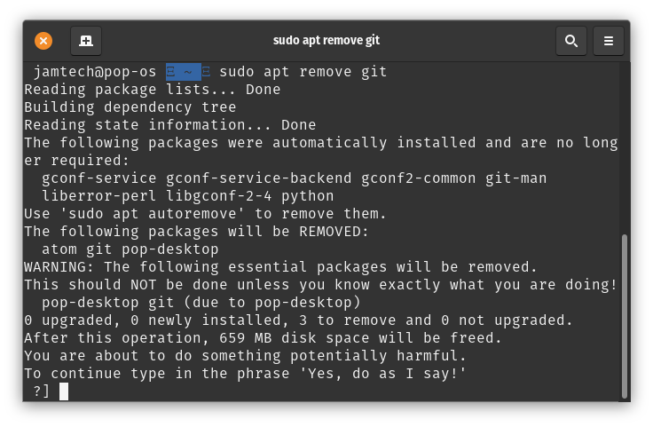

The Linux kernel and the distributions that surround it are pretty cool, most of the time. They've managed to create an operating system that is open source and respects the user with the abilities to do powerful tasks with it. Even if that task is to run sudo rm -rf / because someone told you deleting the entire top-level root directory gave you a performance boost, which it doesn't, it just destroy's your data. Linux at times can even be better than Windows, especially now with Microsoft forcefully and pretty desperately trying to get people to use AI features in Windows because they've invested so much money into it and aren't seeing a return.
But there are a few things that just aren't great. For one, NVIDIA drivers. NVIDIA and Linux for a very long time, didn't play nice. There's a video of Linus Torvalds, creator of Linux, demonstrating his disdain with NVIDIA with a pretty famous gesture and phrase which I wont repeat but let's say, involved some profanities. NVIDIA drivers for the longest time, were closed source, offered worse performance than Windows, and were pretty challenging to get properly running on a lot of systems. I even struggled for the first time, where I kept getting black screens and then anomalies, and then I just gave up for a while. It's way better now, with open source drivers and less hassle to get sorted, it's a far better experience. But it's not out of benevolence, it's out of need for their AI customers, as they now demand proper and effective performance, and need Linux for the stability it provides. NVIDIA must now focus on Linux, weather they like to or not.
Another thing is that games are pretty finicky to get working. Most games are released for Windows, which isn't a problem if... you use Windows. But if the developer doesn't release any Linux support, you are on your own. WINE, a compatibility layer for Linux to use Windows programs on it, and Proton, a modification of WINE by Valve, have done massive work to get many Windows games working on Linux, but it's not perfect. Some games refuse to work, especially hyper-competitive games with very annoying anti-cheats. Other games work with tons, and tons of mods and tweaks, but a lot of games just work, which is cool! If a developer doesn't want to support Linux, it's fine. But sometimes I wish I could just sit and play something without worrying too much about support or bugs.
The last thing I'll mention is the almost sickening amount of choice. There are thousands of distributions of Linux. Some focus on enterprise, some on gaming, others on casual users, and others are for those who want to waste their time. It can be pretty paralyzing and may turn people off Linux, especially if they ask for help and people aren't very helpful or are just rude. Ubuntu was solid for a bit, then Canonical tried to be the Microsoft for Linux. Arch Linux requires far too much setup for most people and can be a waste of time, especially when things break. Debian is old, and very, very slow at updating. Kali isn't a daily use operating system and honestly, even for security work it feels old and clunky. Finally, I only remembered Pop_OS! existed because I used it some time ago, but it's no longer recommended as it's now in beta and tons of things don't work, even though nowhere on the site does it say it's beta software.

Basically, "do you want to delete your entire desktop instead of Git? If so, type Yes!"Linux is amazing, but I just wish things were even better. Maybe finally I can stop using Windows, and avoid macOS like the plague even more! ...Even if macOS is built on Unix.... and Linux is a Unix-like operating system... BUT IT DOESN'T MATTER! If you're ever curious, check it out, otherwise, just use your computer how you'd like :)